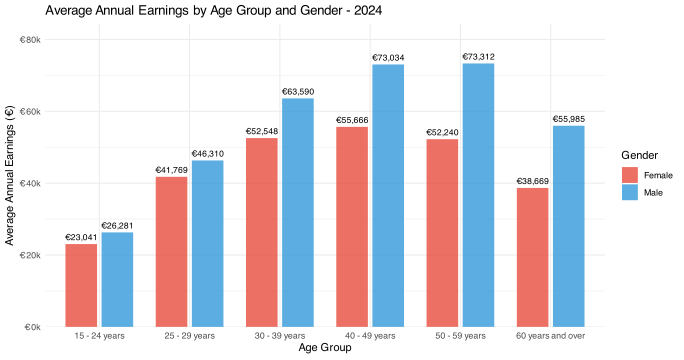

Exploring the Irish Gender Earnings Gap Story
Exploring the earning gaps via scrollytelling
A brief overview of gender pay gap in Ireland Explored via Closeread. Find the repo here
How unequal are annual earnings between men and women?
In 2024, administrative payroll data provides a near-complete picture of annual earnings in Ireland.Unlike survey data, these figures are derived directly from employer tax records.
This is not a sample. It is the observed structure of the labour market. Today we examine one question: How unequal are annual earnings between men and women?
Conclusion
The gender earnings gap widens steadily over the life cycle, rising from 12.3% in early career to 30.9% by age 60+. While the gap is modest at labour market entry, it expands sharply from age 30 onward, peaking in later career stages.Since employment percentages are broadly similar across genders, this widening gap cannot be explained by participation alone. Instead, the pattern suggests cumulative effects linked to career progression, seniority, sectoral distribution, and wage dispersion over time.